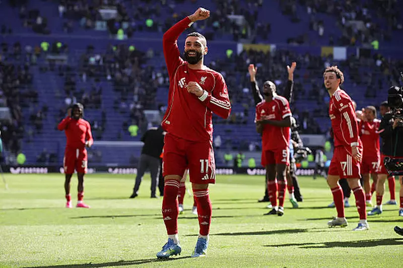

مازالت أصداء قرار النجم الدولي المصري محمد صلاح، عن صفوف ليفربول الإنجليزي، في نهاية الموسم الحالي، مستمرة على الساحتين، العربية والعالمية.
وأعلن محمد صلاح مطلع إبريل الجاري، اتخاذ قرارًا حاسمًا، بالرحيل عن ليفربول، بعدما قضى 9 مواسم حافلة بالإنجازات الجماعية والفردية، محليًا وقاريًا، رغم امتداد عقده الحالي حتى 2027.
وتحدث مدافع ليفربول السابق، ستيج إنجي بيورنبي، الذي لعب للنادي بين عامي 1992 و2000، عن رحيل الفرعون المصري، مشيدًا بمسيرته الحافلة، وموضحًا موقفه من قرار اللاعب ووجهته القادمة في الملاعب.
تعليق أسطورة ليفربول على رحيل محمد صلاحوفي حديثه عبر قناة "Modern MTI" قال بيورنبي: “محمد صلاح هو أسطورة ليفربول الحقيقية وله سجل رائع في نادٍ عظيم مثل ليفربول، لقد حقق نتائج استثنائية للنادي على مدار العديد من المواسم الماضية".
"كانت هناك بعض المناقشات الساخنة حول وضعه العام الماضي ليصل الطرفان إلى اتفاق للتجديد حتى 2027، لكن هذا الموسم مع حدوث بعض النقاشات بين اللاعب والإدارة تغير الأمر، وقد ظل مخلصا للنادي حتى النهاية".
"يدرك معظم المعجبين أنه بذل كل ما في وسعه لصالح الفريق خلال السنوات الماضية، والآن يتطلع إلى خوض تجربة جديدة، لا أعرف ما هي خطته القادمة، وقد ناقشنا الأمر في نادي رينجرز، الذي أعمل مستشارًا له".
"بالتأكيد وكما تعلمون لا أعلم إلى أين قد يذهب محمد صلاح، بعد قراره بالرحيل عن آنفيلد، لكنني أعتقد أن معظم الناس ممتنون لما فعله للنادي بأهدافه وتألقه طوال السنوات الماضية".
“أنا مخلص للغاية لنادي ليفربول، ولأكون صادقًا، أنا لست قريبًا بما يكفي من الأعمال الإدارية وخطط النادي الإنجليزي، لكي أمنحكم رأيًا واضحًا، كنت من محبي هذا النادي ومشجعيه منذ أن كنت طفلاً".
"أشعر بسعادة كبيرة للمسيرة الكبيرة التي قضيتها مع الفريق طيلة ثماني سنوات، وأثق تمامًا في الهيكل الإداري وما يصدره من قرارات، الإدارة بالطبع هي من ستقرر عن جماهير النادي القرار الأفضل، بالتشاور مع آرني سلوت".
الأقرب لحصد لقب الدوري الإنجليزي"الفوز يصبح عادة، وهو ما أتقنه مانشستر سيتي، الآن أصبح الفريق الأقوى والأقرب لحصد لقب الدوري الإنجليزي، على حساب آرسنال، الذي فشل في الاحتفاظ بالصدارة في الأمتار الأخيرة من موسم الدوري".
"لقد تعثر أرسنال في وقت لا يمكن خلاله التفريط في النقاط لا سيما عندما يكون الأمر مهمًا ومؤثرًا في المنافسة على اللقب، والآن يبدو مانشستر سيتي لا يهزم، ولذلك أختاره لحصد لقب البريميرليج".
اخبار الدوري المصري قائمة تسجيل الدخول